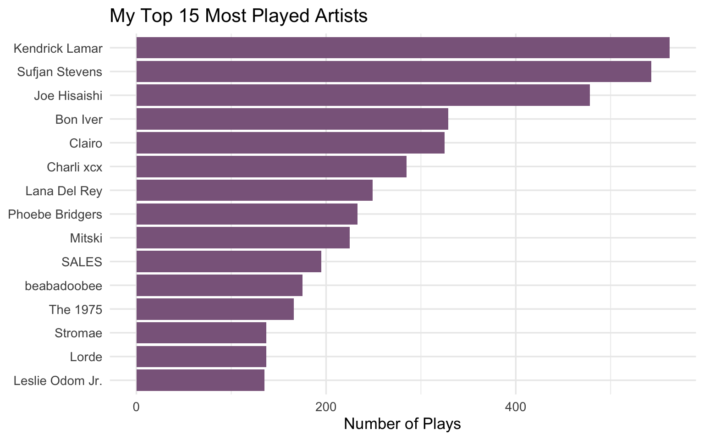
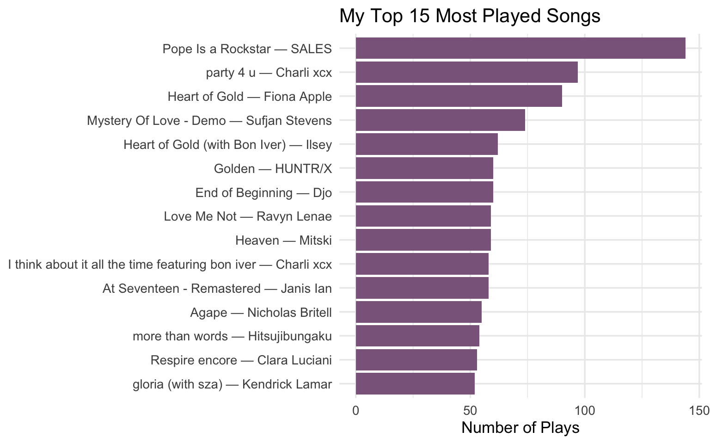
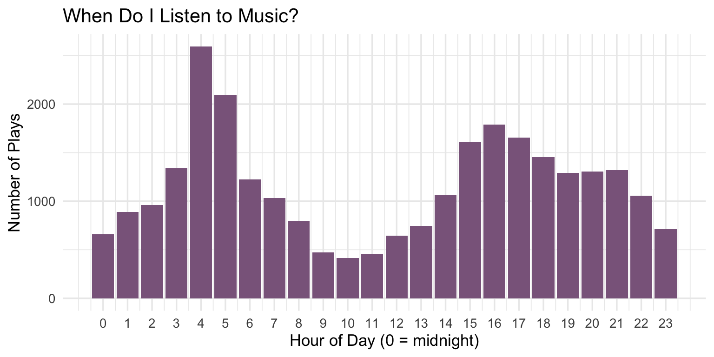
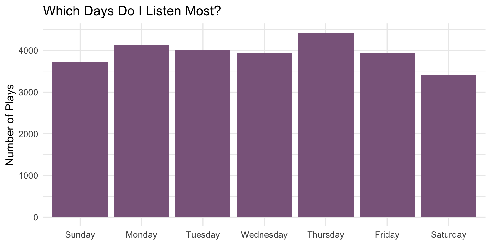
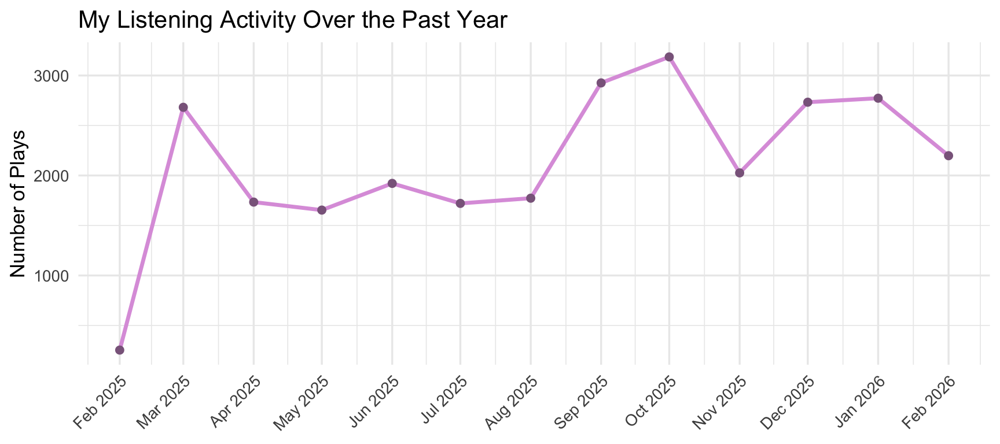
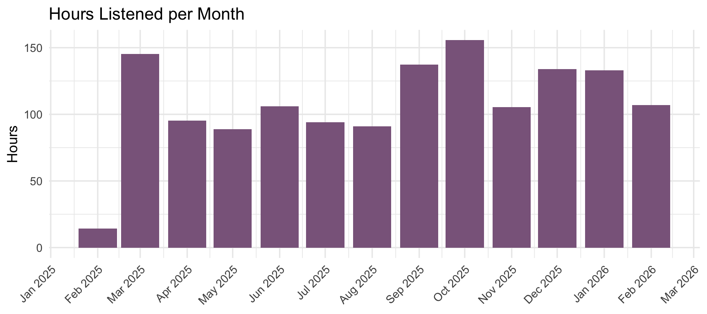
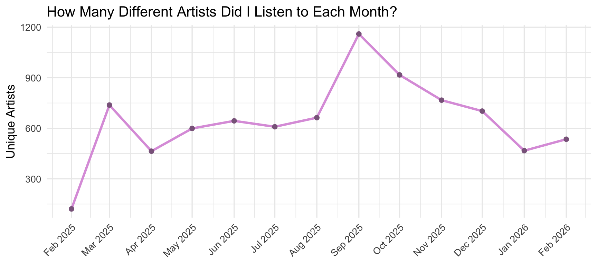

In this portfolio, I decided to analyze my spotify data to learn more about my musical preferences.
json_files <- list.files(path = "p04/Spotify Account Data",
pattern = "StreamingHistory_music.*\\.json",
full.names = TRUE)
raw <- json_files %>%
map(fromJSON) %>%
bind_rows()
# Preview the raw data
glimpse(raw)## Rows: 41,528
## Columns: 4
## $ endTime <chr> "2025-02-25 01:05", "2025-02-25 01:05", "2025-02-25 01:06",…
## $ artistName <chr> "Lana Del Rey", "The Cinematic Orchestra", "Jaymes Young", …
## $ trackName <chr> "California", "To Build A Home", "Happiest Year", "i love y…
## $ msPlayed <int> 1043, 170379, 983, 753, 733, 563, 733, 393, 0, 713, 453, 10…df <- raw %>%
rename(
timestamp = endTime,
ms_played = msPlayed,
track = trackName,
artist = artistName
) %>%
mutate(
timestamp = ymd_hm(timestamp), # note: ymd_hm not ymd_hms, no seconds in basic format
date = as_date(timestamp),
hour = hour(timestamp),
day_of_week = wday(timestamp, label = TRUE, abbr = FALSE),
month = floor_date(date, "month"),
minutes_played = ms_played / 60000
) %>%
filter(
!is.na(track),
ms_played > 30000
)## Total plays: 27581## Unique tracks: 5447## Unique artists: 2823## Date range: 2025-02-25 to 2026-02-25## Total hours listened: 1406.7df %>%
count(artist, sort = TRUE) %>%
slice_head(n = 15) %>%
mutate(artist = fct_reorder(artist, n)) %>%
ggplot(aes(x = n, y = artist)) +
geom_col(fill = "plum4") +
labs(
title = "My Top 15 Most Played Artists",
x = "Number of Plays",
y = NULL
) +
theme_minimal(base_size = 13)
df %>%
count(track, artist, sort = TRUE) %>%
slice_head(n = 15) %>%
mutate(label = paste0(track, " — ", artist),
label = fct_reorder(label, n)) %>%
ggplot(aes(x = n, y = label)) +
geom_col(fill = "plum4") +
labs(
title = "My Top 15 Most Played Songs",
x = "Number of Plays",
y = NULL
) +
theme_minimal(base_size = 13)
df %>%
count(hour) %>%
ggplot(aes(x = hour, y = n)) +
geom_col(fill = "plum4") +
scale_x_continuous(breaks = 0:23) +
labs(
title = "When Do I Listen to Music?",
x = "Hour of Day (0 = midnight)",
y = "Number of Plays"
) +
theme_minimal(base_size = 13)
df %>%
count(day_of_week) %>%
ggplot(aes(x = day_of_week, y = n)) +
geom_col(fill = "plum4") +
labs(
title = "Which Days Do I Listen Most?",
x = NULL,
y = "Number of Plays"
) +
theme_minimal(base_size = 13)
df %>%
count(month) %>%
ggplot(aes(x = month, y = n)) +
geom_line(color = "plum", linewidth = 1.2) +
geom_point(color = "plum4", size = 2) +
scale_x_date(date_labels = "%b %Y", date_breaks = "1 month") +
labs(
title = "My Listening Activity Over the Past Year",
x = NULL,
y = "Number of Plays"
) +
theme_minimal(base_size = 13) +
theme(axis.text.x = element_text(angle = 45, hjust = 1))
df %>%
group_by(month) %>%
summarise(hours = sum(minutes_played) / 60) %>%
ggplot(aes(x = month, y = hours)) +
geom_col(fill = "plum4") +
scale_x_date(date_labels = "%b %Y", date_breaks = "1 month") +
labs(
title = "Hours Listened per Month",
x = NULL,
y = "Hours"
) +
theme_minimal(base_size = 13) +
theme(axis.text.x = element_text(angle = 45, hjust = 1))
How many unique artists did I listen to each month?
df %>%
group_by(month) %>%
summarise(unique_artists = n_distinct(artist)) %>%
ggplot(aes(x = month, y = unique_artists)) +
geom_line(color = "plum", linewidth = 1.2) +
geom_point(color = "plum4", size = 2) +
scale_x_date(date_labels = "%b %Y", date_breaks = "1 month") +
labs(
title = "How Many Different Artists Did I Listen to Each Month?",
x = NULL,
y = "Unique Artists"
) +
theme_minimal(base_size = 13) +
theme(axis.text.x = element_text(angle = 45, hjust = 1))